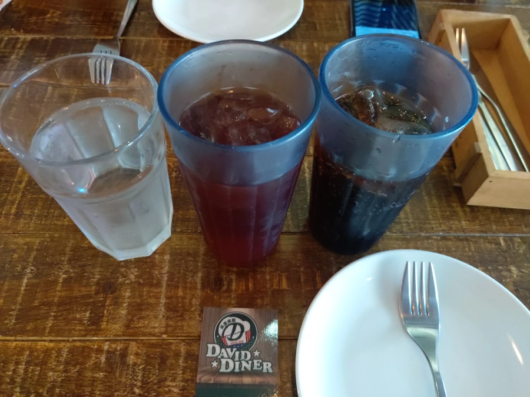

[中壢] David Diner 大衛美墨料理 - 中壢中原店
| 餐廳名稱: | David Diner 大衛美墨料理 - 中壢中原店 |
|---|---|
| 地 址: | 桃園市中壢區協同街43號 |
| 營業時間: | 週二至週四 12:00-22:00 |
| 週五至週日 12:00-23:00 | |
| 週一 公休 | |
| 電 話: | 03 456 3588 |
從台北回竹北的路上，臨時起意找個午餐吃，相中了 這間 Google 高分的 David Diner 大衛美墨料理 - 中壢中原店。 這間在中原夜市的最外圍，隔壁是個私人停車場，車一停好，一位工作人員就趕快出來收錢，停車一次就收三小時一百元。 可是不停這裡，這邊人生地不熟，也不知還有哪裡可停車。只好想著吃完 David Diner 吃完後，去中原夜市晃晃， 讓三小時不要虧太多。
剛開門我們就到了，算第二組客人，30分鐘後，全滿，包括兩組室外座位。上面的門口相片是離開時拍的。
簡單的美國車牌、海報等裝飾品。
牆上黑板有推薦菜單，不過看起來沒放什麼隱藏菜色。
室外的座位。客滿時，就只好讓客人坐外面。

官方FB粉絲頁有 菜單 ，跟我現場的 兩頁菜單長得不一樣，官網菜單加了更多圖片，不過講的東西都一樣。下圖是現場菜單。
今天就懶得仔細想單點了，選了半份豬肋排分享餐。下圖是三選一的 墨西哥牛肉香料飯起司捲餅。 第一次看到做成圓柱體，脆的。 加上起司、沾醬 還挺好吃的。
半份豬肋排分享餐 有兩杯飲料，店員看我們有三位，準備了第三杯，就是水。其實兩杯飲料是可以續的，店員也沒在管由誰喝了。
飲料其實就是 Pepsi 提供的，所以除了百事可樂，七喜等，還有 山露 Mountain Dew ，這是金牙貓美國留學時就常喝的， 據說是汽水中咖啡因最高的，是程式設計師的最愛，回國幾年後引進台灣了。這邊有山露，金牙貓高興地喝了一大杯， 放眼望去，大部分的人都要這個飲料，蠻受歡迎的。那就奇怪了，其他賣場好像都沒賣啊。 
豬肋排有三種口味，一個德州辣的，一個藍莓偏甜，那就選 波本BBQ 烤豬肋排 吧。 還有附薯條、雞翅、雞翅腿、雞胸肉。 烤豬肋排 軟嫩，算OK ，可是口味還是個人不喜歡的偏甜。 薯條 炸的皮脆鹹香，挺優秀的。 雞翅、雞翅腿 的烤肉醬，一樣是個人不喜歡的偏甜，應該還是蠻多人愛的啦。 雞胸肉有淋融化的起司，終於不甜了，覺得還蠻好吃的。
David Diner 大衛美墨料理 - 中壢中原店 食物美味，服務人員親切，難怪 Google 高分，有機會會再訪。
吃完接近兩小時，慢慢地晃一下中原夜市，很多攤都差不多這時候準備開店，一部分的攤位一大早就開始營業了， 亂逛幾間店，買兩個生煎包。有個出名蔥燒包多年前買過，今天算了。有攤地瓜球有人排隊，不過沒那麼愛地瓜球。 亂晃一圈後，不滿三小時的部分只好送停車場，啟程回家了。